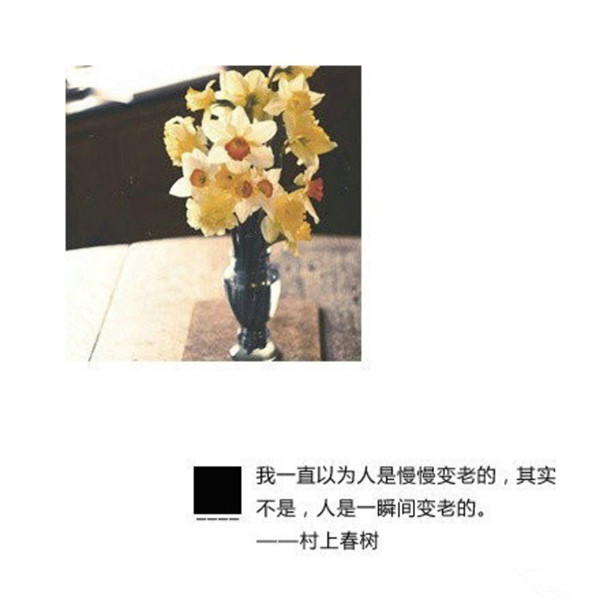

村上春树语录
作者：村上春树
摘抄人：吴泽发 时间：2015.9
（一）你要做一个不动声色的大人了。不准情绪化，不准偷偷想念，不准回头看。去过自己另外的生活。你要听话，不是所有的鱼都会生活在同一片海里。
（二）我一直以为人是慢慢变老的，其实不是，人是一瞬间变老的。
（三）不管全世界所有人怎么说，我都认为自己的感受才是正确的。无论别人怎么看，我绝不打乱自己的节奏。喜欢的事自然可以坚持，不喜欢怎么也长久不了。
（四）刚刚好，看见你幸福的样子，于是幸福着你的幸福。
（五）我或许败北，或许迷失自己，或许哪里也抵达不了，或许我已失去一切，任凭怎么挣扎也只能徒呼奈何，或许我只是徒然掬一把废墟灰烬，唯我一人蒙在鼓里，或许这里没有任何人把赌注下在我身上。无所谓。有一点是明确的：至少我有值得等待有值得寻求的东西。
（六）不必太纠结于当下，也不必太忧虑未来，当你经历过一些事情的时候，眼前的风景已经和从前不一样了。
（七）不存在十全十美的文章，如同不存在彻头彻尾的绝望。
（八）活着就意味必须要做点什么，请好好努力。
（九）希望你下辈子不要改名，这样我会好找你一点。
（十）每天差不多都是相同的重复。昨天和前天颠倒顺序，也没有任何不便。我不时想，这叫什么人生啊！但也没有因此感觉光阴虚度。我仅仅是感到惊讶，惊讶于昨天与前天毫无区别，惊讶于自己被编排入这样的人生，惊讶于自己留下的足迹甚至还未及认清，就在转瞬间被风吹走，变得无影无踪。
（十一）如果我捉不住他，留不住他，我会让他飞。因为他有自己的翅膀，有选择属于自己的天空的权利
（十二）违背了自己定下的原则，哪怕只有一次，以后就将违背更多的原则。
（十三）我这个人是那种喜爱独处的性情，或说是那种不太以独处为苦的性情。每天有一两个小时跟谁都不交谈，独自跑步也罢，写文章也罢，我都不感到无聊。和与人一起做事相比，我更喜欢一个人默不作声地读书或全神贯注地听音乐。只需一个人做的事情，我可以想出许多来。
（十四）世上有可以挽回的和不可挽回的事，而时间经过就是一种不可挽回的事。
（十五）超过了一定年龄，所谓人生，无非是一个不断丧失的过程。对您的人生很宝贵的东西，会一个接一个，像梳子豁了齿一样，从您手中滑落下去。取而代之落入您手中的，全是些不值一提地伪劣品。体能，希望，美梦和理想，信念和意义，或是您所爱的人，这些一样接着一样，一个人接着一个人，从您身旁悄然消逝。而且一旦消失，您就再也别想重新找回，连找个代替的东西都不容易。这可真够戗。有时简直像是拿刀子在身上割，苦不堪言。
（十六）你要记得那些黑暗中默默抱紧你的人，逗你笑的人，陪你彻夜聊天的人，坐车来看望你的人，陪你哭过的人，在医院陪你的人，总是以你为重的人，带着你四处游荡的人， 说想念你的人。是这些人组成你生命中一点一滴的温暖 ，是这些温暖使你远离阴霾， 是这些温暖使你成为善良的人。
（十七）人的生命虽然本质上是孤独的东西，却不是孤立的存在。它总是在某个地方与别的生命相连。
（十八）因为怎么努力都没办法到任何地方，所以到这地步，只好彼此觉悟。
（十九）慷慨付出的，便是经常得到的。
（二十）越是不思考的人，越不愿倾听别人说话。